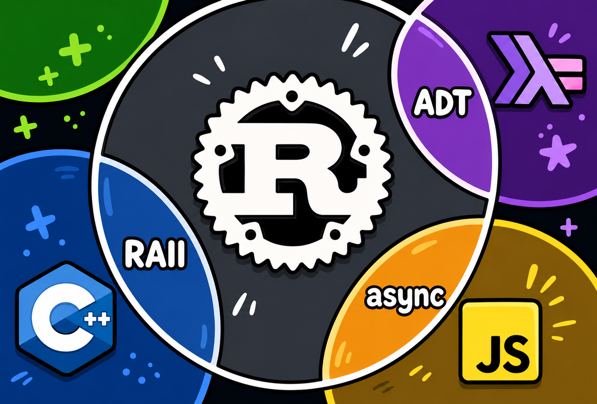

Based on the famous diagram showing Rust at the intersection of C++, Haskell, and JavaScript. This guide explores why many programmers describe Rust as a language that combines powerful ideas from multiple programming traditions.

At first glance, the image may give the impression that Rust is simply a combination of C++, Haskell, and JavaScript. That is not what it means. Programming languages do not evolve by copying one another wholesale. Instead, language designers study successful ideas from existing languages, refine them, and adapt them to solve different problems.
Rust is an excellent example of this philosophy. Its creators wanted a language capable of writing low-level systems software while dramatically reducing memory-related bugs. Rather than reinventing every concept from scratch, they adopted proven ideas from multiple programming paradigms.
The diagram highlights three of those influences:
It is important to understand that Rust is not a "better C++" nor a "systems version of JavaScript." Instead, it is a language with its own identity that selectively borrows ideas while introducing several concepts that are entirely its own.
RAII stands for Resource Acquisition Is Initialization. It is one of the most important ideas inherited from C++.
Instead of manually cleaning resources, cleanup happens automatically when objects leave scope.
The idea behind RAII is surprisingly simple: every resource should belong to an object, and when that object dies, the resource should be released automatically.
Although people often think only about memory, RAII applies to almost every resource a program can own:
Because cleanup is deterministic, developers don't have to remember to call special cleanup functions in every possible execution path. Even if an exception occurs in C++ or an error is returned in Rust, resources are still released automatically.
{
std::ofstream file("log.txt");
// use file
} // destructor automatically closes file
{
let file = File::create("log.txt").unwrap();
} // Drop automatically runs
This helps prevent:
RAII is especially useful in concurrent programming. Imagine several threads sharing the same data. A mutex protects that data by allowing only one thread to access it at a time.
{
let guard = mutex.lock().unwrap();
// safely access shared data
} // mutex automatically unlocked
Without RAII, forgetting to unlock the mutex could freeze the entire application.
ADT means Algebraic Data Type. The name sounds intimidating but the idea is simple.
An Algebraic Data Type (ADT) allows us to describe a value that can take one of several well-defined forms. Instead of relying on integers or strings to represent different states, we encode those states directly into the type system.
This makes programs easier to understand because impossible states become impossible to represent. The compiler knows every valid possibility and can help ensure that every case is handled correctly.
A value can be one of several possibilities.
enum Shape {
Circle(f64),
Rectangle(f64, f64),
}
This enum says that every Shape is exactly one of two possibilities:
There is no third option. The compiler understands this and can verify that every possible Shape is considered whenever we use it.
match shape {
Shape::Circle(r) =>
println!("Circle with radius {}", r),
Shape::Rectangle(w,h) =>
println!("Rectangle {} x {}", w, h),
}
Unlike a traditional switch statement, Rust's match expression is exhaustive. If another Shape variant is added later, the compiler immediately reports every location that must be updated.
A Shape is either:
Nothing else.
Some(42) None
Many languages represent missing values using null.
Unfortunately, null references are responsible for countless crashes,
bugs, and security vulnerabilities.
Rust removes null entirely. Instead, the absence of a value is represented explicitly using Option<T>. A value is either:
Because both possibilities are encoded in the type system, the compiler encourages programmers to consider both cases.
Ok(value) Err(error)
Errors become part of the type system.
Result works similarly but represents success or failure. Instead of throwing exceptions, Rust returns a value indicating whether an operation succeeded.
let file = File::open("notes.txt");
match file {
Ok(f) => println!("Opened successfully"),
Err(e) => println!("Error: {}", e),
}
This makes error handling explicit and predictable. Instead of hidden control flow caused by exceptions, the possibility of failure becomes part of the function's signature.
JavaScript popularized async/await. Rust adopted a very similar syntax.
const users = await fetch(url);
let users = reqwest::get(url).await?;
The syntax looks similar, but internally they differ greatly.
JavaScript popularized async/await because it dramatically simplified asynchronous code. Instead of deeply nested callbacks, developers could write asynchronous operations almost as if they were synchronous.
Rust adopted nearly identical syntax, making the feature immediately familiar to developers coming from JavaScript, TypeScript, or C#. However, beneath the surface, the implementation is very different.
Rust async functions return objects called Futures. These futures do nothing until they are executed by an asynchronous runtime such as Tokio. This design keeps asynchronous programming efficient while allowing developers to choose the runtime that best fits their application.
| Feature | JavaScript | Rust |
|---|---|---|
| Garbage Collector | Yes | No |
| Runtime Required | Yes | Optional |
| Performance | Good | Excellent |
| Zero Cost | No | Often Yes |
The most important Rust features are not visible in the image.
let s = String::from("hello");
let t = s;
// s is no longer valid
Ownership ensures every piece of memory has exactly one owner.
Ownership is arguably Rust's most distinctive feature. Every value in Rust has exactly one owner. When ownership moves to another variable, the previous owner can no longer access the value.
Although this may seem restrictive at first, it eliminates entire categories of bugs, including double frees, dangling pointers, and use-after-free errors.
The compiler checks ownership entirely at compile time, meaning there is no runtime performance penalty.
let s = String::from("hello");
print_length(&s);
References allow temporary access without transferring ownership.
Sometimes moving ownership is not desirable. Perhaps several functions only need to read the same data. Borrowing allows temporary access without transferring ownership.
let s = String::from("hello");
print_length(&s);
println!("{}", s);
Notice that the original owner can still use the String after the function call because only a reference was borrowed.
Rust distinguishes between immutable references (&T) and mutable references (&mut T), preventing data races before a program ever runs.
Lifetimes help the compiler verify references never outlive the data they point to.
This prevents entire categories of crashes and security vulnerabilities.
Historically programmers had a difficult choice:
| Language Type | Advantage | Problem |
|---|---|---|
| C / C++ | Fast | Memory bugs |
| Java | Safe | Garbage collection overhead |
| JavaScript | Productive | Runtime cost |
| Rust | Fast + Safe | Steeper learning curve |
Rust's goal is simple:
Provide C++-level performance while preventing entire classes of memory errors at compile time.
C++
(Speed & Control)
|
|
V
+----------------+
| Rust |
+----------------+
/ \
/ \
Haskell JavaScript
(ADTs) (Async)
Rust takes ideas from multiple worlds and combines them into a language focused on safety, correctness, and performance.
For decades developers had to choose between two competing priorities: performance and safety.
Languages like C and C++ gave programmers direct control over memory, allowing software to run extremely fast. However, that flexibility also introduced bugs such as buffer overflows, dangling pointers, and use-after-free errors.
Higher-level languages such as Java, Python, and JavaScript solved many of these issues by introducing garbage collectors. While this greatly improved developer productivity, it also introduced runtime overhead and reduced low-level control.
Rust attempts to offer the best of both worlds. Its ownership system catches many memory errors during compilation, allowing programs to remain both safe and highly efficient without requiring a garbage collector.
The diagram is popular because it captures something real: Rust feels familiar to developers coming from different backgrounds.
But ownership, borrowing, and the borrow checker are uniquely Rust. Those ideas are what make Rust much more than the overlap of other languages.
The famous illustration is an excellent conversation starter, but it cannot capture everything that makes Rust unique. Several of Rust's defining innovations have no direct equivalent in the languages shown.
These ideas work together to create a language that is much more than the sum of its influences. Understanding the diagram is a great first step, but mastering Rust means learning the concepts that exist beyond it.